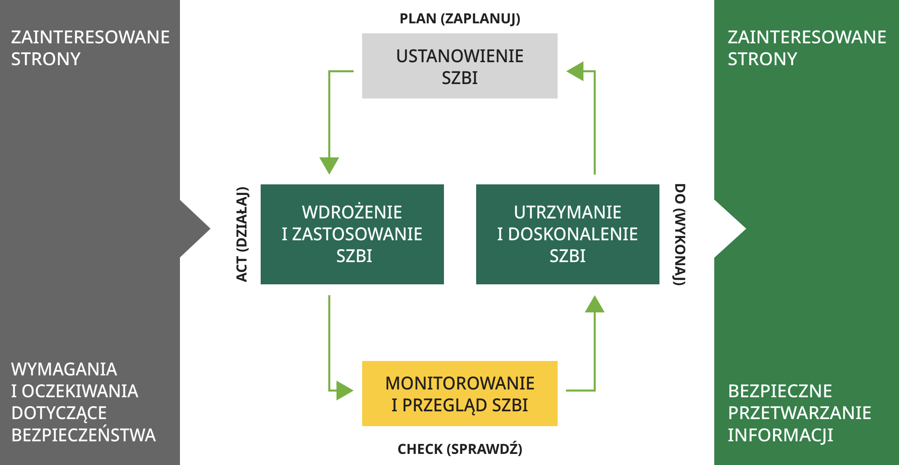

Bezpieczeństwo informacji to zagadnie- nie, które w większym lub mniejszym stopniu dotyczy lub może dotyczyć każdej organizacji (przedsiębiorstwa, urzędu, itd.). Dlaczego? Dlatego, że każda organi- zacja jest właścicielem danych i informacji, które gromadzi, udostępnia i przetwarza w ramach prowadzonej działalności. Informacje i dane stają się jednym z najważniejszych aktywów, stanowią coraz większą wartość dla innych. Ktoś, kto powierza innej firmie np. swoje dane osobowe, tajemnicę przedsiębiorstwa lub inne poufne informacje, chce być pewien tego, że jego dane nie znajdą się „na ulicy" lub nie zostaną wykorzystane w sposób niezgodny z intencją lub nie znajdą się w posiadaniu stron „trzecich". W każdym z tych przypadków, jeżeli zaistnieją, organizacja poniesie konse- kwencje, które najczęściej spowodują w efekcie końcowym straty. informacji i jej zdobycie może stanowić źródło dochodu. Jednocześnie wiele orga- nizacji w Polsce i na świecie odnotowuje straty z tytułu utraty informacji. Pomimo zwiększania wydatków na inwestycje w zabezpieczenia i pojawianiu się na rynku coraz lepszych, bardziej efektywnych zabezpieczeń, problem wciąż istnieje.
Dlaczego?
Jest to związane z tym, że organizacje nie posiadają dostatecznej wiedzy, wypracowa- nych procedur i mechanizmów ochrony przed zagrożeniami utraty poufności, dostępności lub integralności informacji. Innym ważnym elementem w tej sprawie jest czynnik ludzki, który stanowi jednocze- śnie podstawę działania każdej organizacji ale również źródło potencjalnej straty. Występuje coraz większa migracja pracow- ników między konkurującymi firmami, co stwarza ryzyko naruszeń bezpieczeństwa informacji. Dlatego jest potrzeba, aby każda organizacja posiadała wdrożony cały system ukierunkowany na bezpieczeństwo informacji, który ujmowałby całość zagad- nień i gwarantował skuteczność
System zarządzania bezpieczeństwem informacji [SZBI] jest częścią systemu zarządzania organizacją, opartego na ocenie ryzyka dotyczącego bezpieczeństwa informacji rozpatrywanego w kontekście biznesowym danej organizacji, która ma ustanowić, wdrożyć, prowadzić, monitoro wać, przeglądać, utrzymywać i doskonalić bezpieczeństwo informacji. System zarzą dzania obejmuje m.in. strukturę organiza cyjną, kierunki działania, działania plani styczne, odpowiedzialności, praktyki, procedury, procesy i zabezpieczenia. SZBI jest wprowadzany, by skutecznie realizować wymagania wszystkich stron zainteresowanych działalnością organizacji np. klientów, udziałowców, akcjonariuszy, władze państwowe, pracowników, dostawców. Celem systemu zarządzania bezpieczeń stwem informacji jest zapewnienie bezpiecznego przetwarzania informacji umożlwiającego realizację celów bizne sowych, a także zapewnienie ciągłości biznesu organizacji, jak również zapo bieganie i minimalizowanie ewentual nych strat. Podsumowując system ma zagwarantować organizacji i wszystkim zainteresowanym stronom zachowanie poufności, integralności i dostępności informacji.
Poufność - zapewnienie, że informacje nie są dostępne ani ujawniane nieuprawnionym osobom, podmiotom lub procesom.
Integralność - zapewnienie autentyczności, dokładność i kompletności zarówno danych i informacji.
Dostępność - zapewnienie że dane i informacja są dostępne i możliwe do użycia na życzenie przez uprawniony podmiot lub proces.
Co to znaczy, że firma ma system dotyczący bezpieczeństwa przetwarzania informacji?
System bezpieczeństwa przetwarzania informacji daje racjonalne zapewnienie, że dane kontrahentów i własne są właściwie chronione. Jest minimalizowane ryzyko wykorzystania informacji niezgodnie z intencją oraz jest minimalizowane ryzyko ujawnienia informacji osobom niepowołanym zarówno wewnątrz firmy i poza nią.
Podejście procesowe
Jednym z założeń systemu jest zastosowanie podejścia procesowego do ustanawiania, wdrażania, prowadzenia, monitorowania, przeglądania, utrzymania i doskonalenia SZBI danej organizacji. Podejście procesowe do zarządzania bezpieczeństwem informacji zachęca użytkowników do położenia nacisku na następujące ważne sprawy:
zrozumienie wymagań organizacji w stosunku do bezpieczeństwa informacji oraz potrzeby ustanowienia polityki i celów bezpieczeństwa informacji;
analizy rzeczywistych zagrożeń i oceny ryzyka z punktu widzenia organizacji;
wdrożenie i stosowanie środków mających na celu zarządzanie ryzykami bezpieczeństwa informacji w organizacji w kontekście ogólnych ryzyk biznesowych organizacji;
monitorowanie i dokonywanie przeglądów wyników działania i skuteczności SZBI.
Funkcjonowanie każdej organizacji polega na realizacji wielu połączonych ze sobą procesów, które z kolei składają się z wielu podstawowych działań. Zarządzanie procesami jest najbardziej nowoczesną formą zarządzania organizacją. Najważniejsze elementy podejścia procesowego to:
Określenie, wdrożenie i konsekwentne stosowanie metodyki podejścia procesowego.
Definiowanie procesów głównych oraz pomocniczych występujących w organizacji.
Ustalenie mierników i wskaźników dla procesów oraz ich montowanie i ocenianie.
Drugą bardzo ważną zasadą jest ciągłe doskonalenie procesów. Dzięki jej stosowaniu organizacja staje się bardziej konkurencyjna, sprawniej realizuje cele, precyzyjniej określa swoją strategię, lepiej spełnia oczekiwania klientów i motywuje pracowników, jak również doskonali skuteczność stosowanych zabezpieczeń.
ZAPLANUJ
Ważnym, podstawowym założeniem systemu jest przyjęcie modelu PDCA (Plan - Do - Check - Act czyli Zaplanuj - Wykonaj - Sprawdź - Działaj), który stosowany jest do budowania wszystkich procesów SZBI.
WYKONAJ
Wdróż i stosuj politykę, środki nadzoru, procesy i procedury SZBI.
SPRAWDŹ
Oceń i, tam gdzie to właściwe, zmierz wyniki działania SZBI pod kątem polityki, celów i praktyki SZBI i przedstaw wyniki kierownictwu w celu ich przeglądu.
DZIAŁAJ
Podejmij działania korygujące i doskonalące w tym zapobiegawcze oparte na wynikach wewnętrznych auditów SZBI i przeglądzie dokonanym przez kierownictwo lub na innych odnośnych informacjach, w celu osiągnięcia ciągłego doskonalenia SZBI.
Wymagania systemu zarządzania bezpieczeństwem informacji są adresowane, niezależnie od branży, do wszystkich organizacji, dla których istotnym aspektem działania jest bezpieczeństwo informacji zarówno własnej lub należącej ich klientów, partnerów biznesowych, pracowników czy wreszcie będącej własnością publiczną. Dlatego systemy zarządzania bezpieczeństwem informacji powinny być wprowadzane przede wszystkim wszędzie tam, gdzie operuje się danymi w tym danymi wrażliwymi, np. w bankach, urzędach, instytucjach publicznych, ochronie zdrowia oraz w przedsiębiorstwach biznesowych państwowych i prywatnych w szczególności tych, które są operatorami usług kluczowych i cyfrowych. Nie ma znaczenia wielkość organizacji - wymagania normy ISO mogą stosować zarówno wielotysięczne, wielozakładowe korporacje, jak też małe rodzinne firmy
Jakie normy?
Podstawową, normą międzynarodową zawierającą wymagania dla systemów zarządzania bezpieczeństwem informacji jest: ISO/IEC 27001:2022 Informatyka - Techniki bezpieczeństwa - Systemy zarządzania bezpieczeństwem informacji - Wymagania Jest to norma międzynarodowa według, której jednostki uprawnione (akredytowane) przeprowadzają proces oceny i certyfikacji, potwierdzając lub nie zgodność systemu zarządzania bezpieczeństwem informacji danej organizacji z wymaganiami zawartymi w tej normie.
ISO/IEC 27002 :2022 Bezpieczeństwo informacji, cyberbezpieczeństwo i ochrona prywatności - Kontrola bezpieczeństwa informacji Jest to norma pomocnicza, która stworzona została jako przewodnik (opis, wytyczne, dobre praktyki) dla organizacji, które chcą wdrożyć u siebie SZBI tak, aby zapewnić skuteczność i efektywność. W zakresie bezpieczeństwa informacji wyróżnia się normy ISO/IEC 27002:2022, ISO/IEC 27005:2022, ISO 31001:2018, PN-EN ISO 22301:2020-04 , i in.
Normy są opracowywane i wydawane przez międzynarodową organizację International Organization for Standardization (ISO) oraz następnie mogą być tłumaczone i wydawane przez Polski Komitet Normalizacji (PKN).
Jakie wymagania trzeba spełnić?
Organizacja musi:
ustanowić
stosować
przeglądać
wdrożyć
monitorować
utrzymywać
doskonalić
system zarządzania bezpieczeństwem informacji w oparciu o wymagania norm ISO/IEC 27001:2022, w kontekście swoich działań biznesowych i zagrażających jej ryzyk. Musi także określić wymagania dotyczące wdrożenia środków kontroli/ zabezpieczeń dostosowanych do indywidualnych potrzeb.
Jak wdrożyć SZBI?
Istnieją trzy sposoby wdrożenia systemu. Decydując się na jeden z nich, każda organizacja powinna określić nakłady jakie może na ten projekt przeznaczyć i ustalić optymalny dla niej czas wdrożenia systemu. Po podjęciu decyzji o wdrażaniu systemu organizacja powinna zdecydować jaką metodą będzie realizowany proces budowy i implementacji systemu. Można wybrać jedną z kilku możliwości lub ich kombinację.
1
Organizacja wdraża system
samodzielnie
2
Organizacja wdraża system samodzielnie
z wykorzystaniem zewnętrznych szkoleń.
3
Organizacja wdraża system
przy pomocy firmy konsultingowej.
1. Organizacja wdraża system samodzielnie
Metoda ta zmusza do dużego zaangażowania pracowników, którzy muszą sami
zrozumieć zapisy normy i przełożyć je na
konkretne rozwiązania we własnej organizacji. Sposób ten jest powszechnie uważany za najtańszy. Zewnętrzne koszty wdrożenia są rzeczywiście znikome, ponieważ
nie wymaga on szkoleń i/lub konsultacji.
Pracownicy sami wdrażają system.
W praktyce sposób ten jest mało efektywny, tworzony system wymaga licznych
korekt, co powoduje duże obciążenie
czasowe pracowników (duże kosztywewnętrzne), wywołuje niepewność czy
przyjęte rozwiązania są właściwe i czy
zostaną pozytywnie ocenione przez
jednostkę certyfikującą.
2. Organizacja wdraża system samodzielnie z wykorzystaniem zewnętrznych szkoleń DEKRA
Zaletą tego rozwiązania jest szybkie
i praktyczne zapoznanie pracowników
z normą, co zazwyczaj zwiększa świadomość pracowników oraz teoretycznie
zwiększa zaangażowanie w proces
budowy systemu. Spotkanie z ekspertem
DEKRA umożliwia wymianę doświadczeń
z trenerem prowadzącym szkolenia
i wyjaśnienie wątpliwości związanych
z przeniesieniem wymagań normy do
firmy. Metoda jest optymalna cenowo
i czasowo. Pracownicy uczestniczą w
szkoleniach, podczas których dowiadują
się jak prawidłowo wdrożyć system. Uczą
się jak powinien funkcjonować prawidłowo wdrożony system. Trener pomaga
zrozumieć zasady funkcjonowania systemu, przedstawia możliwe sposoby rozwiązania występujących problemów, lecz nie
proponuje konkretnych rozwiązań. Decyzję dotyczącą wyboru rozwiązań
podejmuje kierownictwo z osobami prowadzącymi projekt. Ten model jest korzystny,
ponieważ właśnie kierownictwo najlepiej
zna potrzeby, możliwości i kulturę organizacyjną firmy. Z odbytych szkoleń pracownicy otrzymują certyfikaty.
Koszty zewnętrzne tego sposobu są
wyższe niż koszty samodzielnego wdrażania ale niższe niż przy zaangażowaniu
konsultanta. W tym modelu znacznie
większe jest prawdopodobieństwo, że
przyjęte rozwiązania systemowe będą
optymalne i co ważne pozytywnie ocenione
przez jednostkę certyfikacyjną (dzięki
wiedzy i doświadczeniu trenera). Obciążenie czasowe jest niższe, co zmniejsza
koszty wewnętrzne.
3. Organizacja wdraża system przy pomocy firmy konsultingowej DEKRA
Ta metoda jest najbardziej kosztowna lecz
najbardziej wygodna i optymalna. Minimalizuje ryzyko wdrożeniowych błędów. Odciąża pracowników firmy. Konsultant DEKRA
współpracuje z wybranymi osobami.
Praktyka pokazuje, że sukces wdrożenia
zależy od firmy konsultingowej, podejścia
najwyższego kierownictwa oraz od osoby
prowadzącej projekt w firmie. Do każdej
organizacji należy podchodzić indywidualnie.
Proces certyfikacji
Po wdrożeniu systemu zarządzania
bezpieczeństwem informacji organizacja
po uprzednim stwierdzeniu gotowości do
certyfikacji występuje do jednostki certyfikacyjnej z wnioskiem o przeprowadzenie
auditu certyfikacyjnego. Jednostka certyfikacyjna przeprowadza ocenę systemu na
zgodność z wymaganiami normy ISO/IEC
27001:2022 i podejmuje decyzję, jeśli
decyzja jest pozytywna potwierdza
formalnie spełnienie kryteriów certyfikacyjnych poprzez przyznanie i wydanie stosownego certyfikatu. Sprawdzenie czy
system jest zgodny z normą i funkcjonuje
odbywa się w formie kilkudniowego (liczba
dni zależy od wielkości organizacji i stopnia
złożoności realizowanych procesów)
audytu.
Audyt systemu zarządzania bezpieczeństwem informacje – jest to niezależna
ocena, która służy do stwierdzenia, czy
i w jakim stopniu system ten funkcjonuje
i jest zgodny z przyjętą normą oraz innymi
obowiązującymi wymaganiami i przepisami.
Warunki i kryteria certyfikacji
Podstawowym kryterium certyfikacji jest to, że system zarządzania bezpieczeństwem informacji jest wdrożony i funkcjonuje w organizacji. Drugim podstawowym kryterium jest to, że wdrożony system spełnia wymagania normy ISO/IEC 27001:202 2, a firma deklaruje gotowość do przeprowadzenia oceny certyfikacyjnej.
Warunki jakie organizacja musi spełnić, aby móc przystąpić do procesu certyfikacji:
jest określony zakres certyfikacji,
jest przeprowadzona i udokumentowana ocena ryzyka bezpieczeństwa informacji,
jest opracowana i udokumentowana deklaracja stosowania,
jest opracowana dokumentacja SZBI,
wdrożone są zabezpieczenie, procedury i systemy monitorowania,
istnieją zapisy z działań pojmowanych w ramach systemu,
system działa co najmniej trzy miesiące licząc od momentu jego uruchomienia,
przeprowadzono pełny cykl auditów wewnętrznych obejmujących cały SZBI,
wdrożono działania wynikające z wyników auditów wewnętrznych i oceny ryzyka,
przeprowadzono przegląd zarządzania.
Certyfikat
Certyfikat zgodności SZBI potwierdza, że
system zarządzania bezpieczeństwem
informacji został sprawdzony i jest
zgodny z normą ISO/IEC 27001:2022.
Certyfikat trzeciej strony wydany przez
niezależną jednostkę certyfikującą stanowi dowód, że organizacja podjęła
niezbędne środki ostrożności, aby zabezpieczyć swoje informacje, informacje innych stron zainteresowanych.
Posiadanie certyfikowanego systemu
zarządzania może być bardzo pomocne do
doskonalenia biznesu. Coraz częściej
posiadanie certyfikatu stanowi także
istotny wymóg kontraktowy.
Akredytacje
Certyfikacja z akredytacją systemu zarządzania jest stosowana do zademonstrowania spełnienia wymagań normy. Aby wydawać certyfikaty z akredytacją jednostka certyfikująca musi się poddać ocenie trzeciej strony - jednostce akredytującej i uzyskać pozytywny wynik takiej oceny. Jednostka akredytacyjna weryfikuje kompetencje jednostki certyfikacyjnej i jej pracowników. Przy wyborze jednostki certyfikującej należy kierować się posiadanymi przez tę jednostkę akredytacjami, jej doświadczeniem w branży, renomą i uznaniem na rynku.
Przeprowadzone badania pokazują, że firmy posiadające certyfikowany system zarządzania, są bardziej konkurencyjne od innych przedsiębiorstw branży i uznawane są za bardziej wiarygodne. Dla osób i instytucji udostępniających im dane są bardziej bezpieczne. Ta przewaga nad podobnymi organizacjami nie posiadającymi wprowadzonego i certyfikowanego systemu jest obserwowana od lat. Dostrzega się też wiele innych korzyści a niektóre natychmiast po wprowadzeniu systemu zarządzania bezpieczeństwa informacji. Należy tu wymienić:
Korzyści zewnętrzne (rynkowe):
poprawa opinii klientów, wzrost zaufania klientów do marki firmy,
zapewnienie spełnienia wymagań obowiązujących norm,
gwarancja niezależnego nadzoru sprawowanego przez niezależne jednostki,
dowód wprowadzania właściwego nadzoru w organizacji,
nadzór i pewność ,że przepisy prawne są przestrzegane w organizacji,
większa wiarygodność przy współpracy z partnerami i kontrahentami,
walor marketingowy dla klientów.
Korzyści wewnętrzne (dla organizacji, która wdrożyła SZBI):
lepsza koordynacja działań w zakresie bezpieczeństwa informacji,
lepszy nadzór nad działaniami,
ochrona majątku i interesów właścicieli firm,
zwiększenie bezpieczeństwa ekonomicznego w kontekście zapobiegania stratom,
umiejętność przewidywania zagrożeń i większa świadomość pracowników,
możliwość szybkiego zidentyfikowania błędów i niezgodności z wymaganiami,
wiedza i możliwość wpływu na zdarzenia wewnątrz organizacji.
Większość polskich organizacji, które zdecydowały się na certyfikację SZBI nie wyobraża sobie żeby mogły powrócić do sytuacji sprzed wprowadzenia systemu.
Jeśli planujesz wdrożenie lub doskonalenie systemu zarządzania bezpieczeństwem informacji – skontaktuj się z wybranym przedstawicielem Zespołu Doradztwa i Szkoleń DEKRA Polska.
DEKRA jest liderem w zakresie systemów zarządzania a w tym systemu zarządzania bezpieczeństwem informacji wg ISO/IEC 2022:2022.
DEKRA wdraża systemy zarządzania bezpieczeństwem informacji oraz prowadzi szkolenia.
Link do kategorii Cyberbezpieczeństwo, bezpieczeństwo informacji, ochrona danych:
WIĘCEJ >Z jasną i ambitną wizją bycia partnerem dla bezpiecznego i zrównoważonego świata, DEKRA Polska wyprzedza potrzeby rynku i oferuje innowacyjne usługi eksperckie oraz rekomendowane kursy, podnoszące kompetencje w zakresie ochrony danych, bezpieczeństwa informacji i ciągłości działania: od pełnomocnika ds. cyberbezpieczeństwa świadczonych usług kluczowych, audytora wewnętrznego, audytora wiodącego, po Inspektora i Ochrony Danych.
Szkolenia, które zmienią Twoją karierę